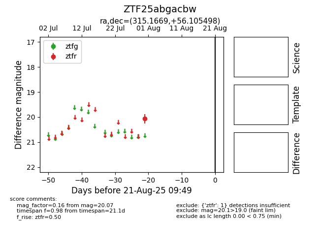

Target ZTF25abgacbw at 2025-08-21 09:49, see:
FINK: fink-portal.org/ZTF25abgacbw
Lasair: lasair-ztf.lsst.ac.uk/objects/ZTF25abgacbw
ALeRCE: alerce.online/object/ZTF25abgacbw
alt names
ZTF25abgacbw (ztf,alerce)
coordinates:
equatorial (ra, dec) = (315.1669,+56.10550)
galactic (l, b) = (94.6125,+6.50183)
photometry
last ztfr=20.07
1 ztfr detections
